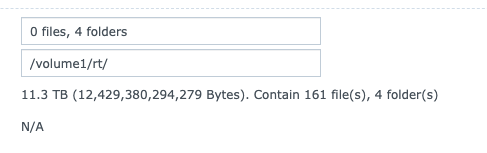

Thanks to Brad Bettencourt for the picture
My final project of the year, I decided to tackle a goal of building a RainbowTable system and added a WebApp front end for use when I'm in the field. Here is how you can build one like it.
This project requires A LOT of storage. Before starting on this adventure, you must have the proper storage capabilities.
To begin, you will first need to download a set of freely available tables from InfoCon. To give you a sense of the space you need, here are some numbers:
In total, you are looking at about 9 TB worth of initial table downloading. I hope your ISP won't get upset at going way over their download limits. These RTI2 tables aren't useful in the latest RainbowTable software, so we will convert them to a more usable format.
Once you have downloaded your tables, we will proceed to converting them. This is where your hardware's capabilities come into play. To begin, we will first convert the RTI2 files into RT files with the "rti2rto" tool, located at either InfoCon or Free Rainbow Tables websites.
If using Windows, you should use the win64 7z file (you will need 7-Zip installed to extract the contents).
If using Linux, you can downloade the src 7z (you will need to install make, cmake, and 7-zip as well). This is the source code, so you will need to use the command "make" to create an exectuable for your system.
NOTE: this will create large files!
Run the created/extracted file by pointing it to the location of the tables. As an example, I had my tables in /rt, so my command was:
This command tells rti2rto to look at all files and folders within /rt and convert them from rti2 to rt. Depending on your hardware, this can be quick, a couple of hours or days in the case of MD5 and NTLM (since both are terabytes big). Note that this is where the tables will grow 250%. When this completes, you can now remove all rti2 files from the folder.
converting rainbowtables from rti2 > rt > rtc 😲
— Irvin Lemus (@InfoSecIrvin) December 17, 2020
This is the all rti2's in a squash partition, all lm hashes in rtc, most of md5 in rtc and ntlm in rt. pic.twitter.com/KJcpeVgsfH
With the large RT files now on your drive, we can begin the process to turn them into the smaller RTC format. First, download the latest version of Rainbowcrack for your OS. Unzip the contents of the zip file. We will use some of the tools within.
At this step, you can create a script to automate the tasks or do the steps manually; either way, they will need to be done for each folder individually. rtmerge and rt2rtc all come from the zip file earlier. Ensure you direct your OS to the proper location of the executable files. Here are the steps:
This process will take more time depending on your hardware. When you are done, you will end up with RTC files that are slightly larger than the RTI2 files we started with, but they will be fully usable with rcrack.
The entire conversion process took me one whole month with 4 VMs connected to a NAS (all 4 NICs bonded) over a Gigabit connection. The total size when competed is 11.3 TB, about 2 GB larger than all the RTI2 files initially downloaded.

rcrack is a program found within the Project-Rainbowcrack zip file downloaded earlier. You can use this documentation to run the program as is. Simply run the program, direct it to the folder that has the hashes, and provide the hash with "-h". Note: Each type of hash (LM, NTLM, SHA1, MD5) must be executed separately. You can't run a MD5 hash and a LM hash from the same folder. For example:
What fun is it to spend all that time building this setup if you can't access it outside via browser when needed during a pentest engagement (at the time of this writing, I have spent a month building out LM and MD5 hashes alone)?
You can use a Linux server on the cloud to be the manner that you and your team can access via the web. With this server, you can install a Let's Encrypt certificate if you have a domain. During a pentest, this server will be able to hide its actions through HTTPS. For basic demonstrations, it will also work just fine over the browser.
On this box, you will need to install Python3, two add-ons and clone the repository where I have the code.
This local VM will do the actual searching of the tables and return the result to the cloud system. On this box, we will use the Sam Bowne instructions above to connect them in a VPN. Once this is complete, we will create a new restricted user that can ONLY run rcrack and nothing else; since this service will be pubilcly available and connected to our internal network, we don't want any leaks.
Back on the Cloud VM, we will install sshpass to pass the restricted user's credentials and execute our request.
We're almost done! First, we need to make some modifications to the program in order for it to work on your setup. Then we can run this and get cracking!
This project was fun to create and execute. I should have all my tables ready by the end of the year and ready for 2021.